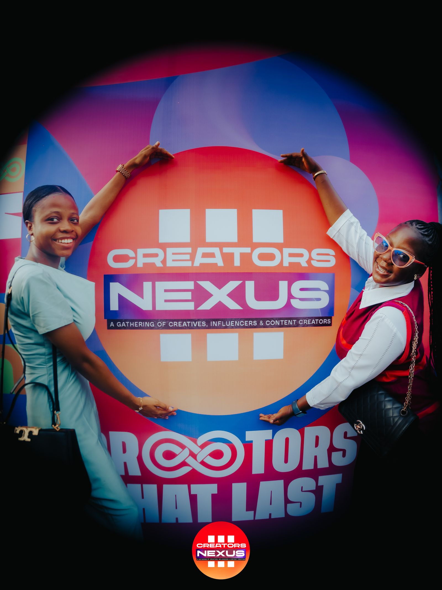
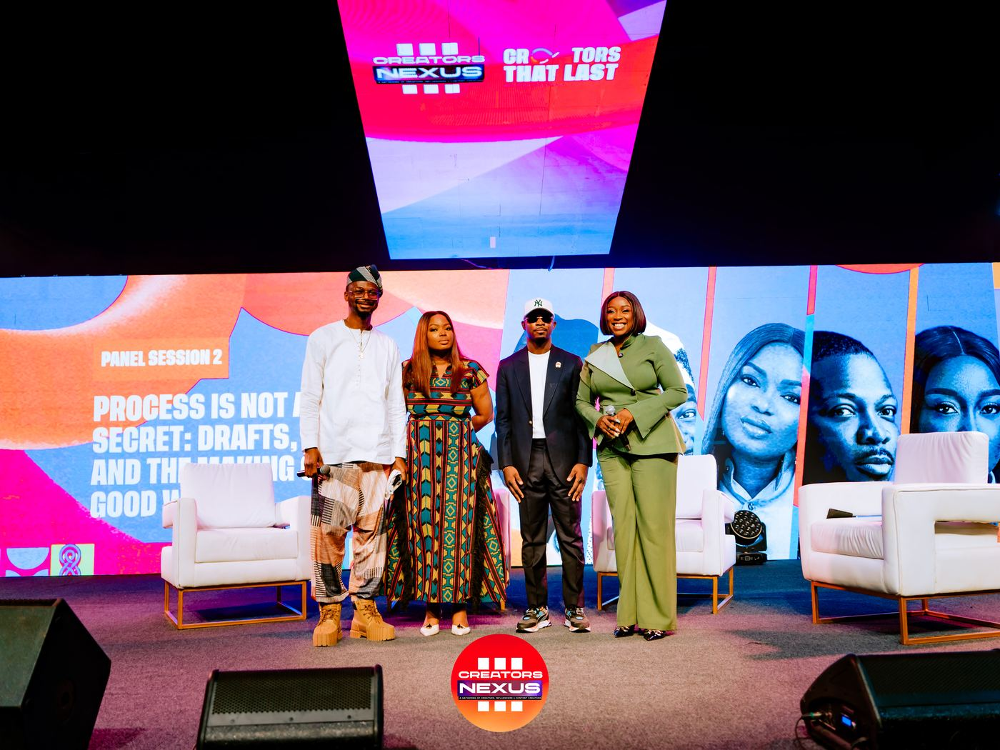

The Creators Nexus Community
Where creatorsbuild.
A professional network and ecosystem designed to help creators connect, learn, access opportunities and grow.
What the Community enables
More than a group chat. A professional network for the African creative economy.
Think LinkedIn, a learning platform, a financial ecosystem and a talent marketplace — built specifically for creatives. That's the ambition. Here's what it means today.
01 · Access
Pathways, not promises
Access to funding and financial infrastructure — not a guarantee that every creator receives every benefit, but a real set of pathways to pursue.
"Creators Nexus doesn't just tell creators how to grow. It gives them pathways to grow."
— Creators Nexus strategy02 · Learning
Two institutions, one purpose
Rather than becoming a school itself, Creators Nexus works alongside a dedicated education partner — so creators get structured learning, not just informal advice.
Creators Nexus
Community, ecosystem, opportunities
The network, the access, the people and the pathways.
Africa Tech Academy
Structured education, training & certification
The Creative Business School, powered by Africa Tech Academy — professionalising what's too often learned informally.
Course areas the Creative Business School could cover
Critically: people leave with recognised certifications. Much creative education is informal — this is built to professionalise it. Programme launch details — content required
03 · Opportunities
A directory in the making
This is where the Community becomes infrastructure, not just media. A structured opportunities directory is coming — here's the shape of it.
Funding
Coming to the directoryGrants
Coming to the directoryJobs
Coming to the directoryPartnerships
Coming to the directoryTraining
Coming to the directoryEquipment
Coming to the directoryCollaborations
Coming to the directoryIndustry opportunities
Coming to the directory04 · Connection — who is it for
The whole creative economy, in one network


05 · Growth — the Community promise
Creators grow through people, knowledge, opportunity, access and connection.
People
A peer network of working creatives.
Knowledge
Structured learning, not just advice.
Opportunity
Real pathways, growing over time.
Access
To capital, tools and industry.
Connection
To the wider Nexus ecosystem.
Ready when you are
Build with the Nexus.
Membership details content required — sign-up opens here once available.